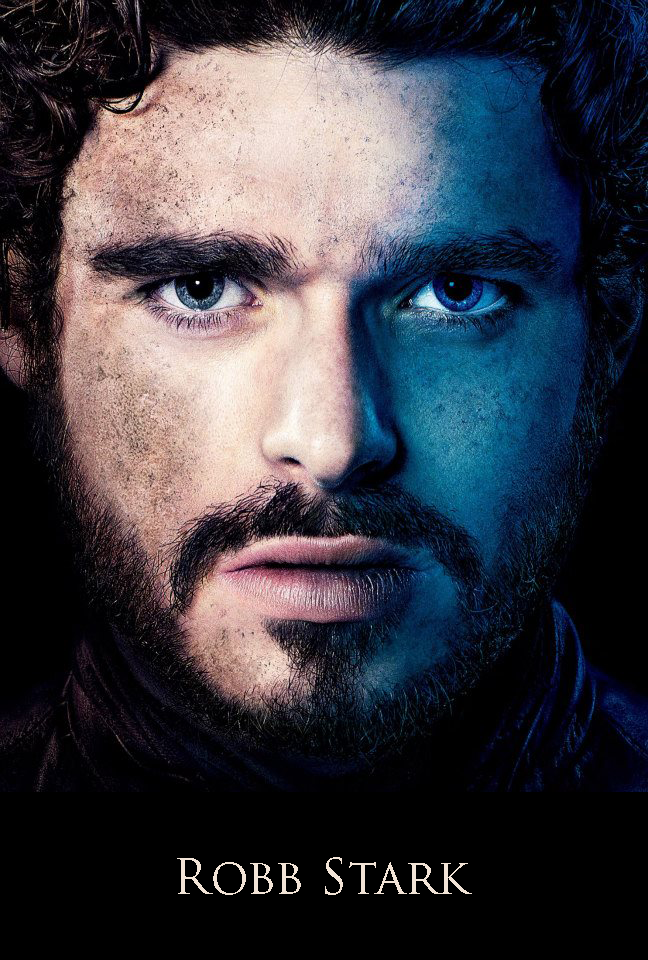

|

|
Robb Stark
Robb Stark is the eldest son of Eddard Stark and Catelyn Tully and the heir to Winterfell and the North. Upon his father's imprisonment for treason, he raises his banners and marches south with a host to aid his allies in the Riverlands and to free his father. After his father's execution, he is named King in the North by his followers. He is called the Young Wolf by many of his followers and foes alike. In the TV series he is played by Richard Madden.
Appearance and Personality
Robb's appearance favors his Tully side, with a stocky build, blue eyes and thick red-brown hair. He is graceful and quick. He opens the series as a boy of fourteen years.[2] See also this collection of images.
Robb is his father's son, with a keen sense of honor and justice. He shares his father's devotion to honor and is frequently accompanied by his direwolf, Grey Wind, whom he always takes with him into battle.
History
Robb was born in Riverrun, presumably the product of Eddard and Catelyn's wedding night, for Eddard raced off to war immediately following the nuptials to fight in Robert's Rebellion.[3] Upon his return from the war, Catelyn greeted Ned with an infant Robb, and all returned to Winterfell, where Ned would rule as Lord and Robb was to be raised as his heir.
Growing up in Winterfell, Robb was on good terms with his younger siblings, and developed a friendly rivalry with his bastard half-brother, Jon Snow, who differs from Robb in appearance and personality.[2] Robb was also close with his father's ward, Theon Greyjoy, who came to regard Robb as something of a younger brother.
|